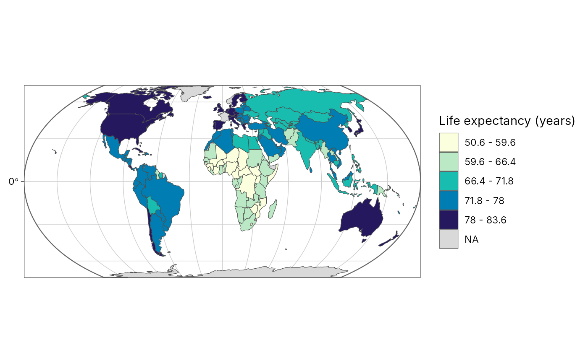
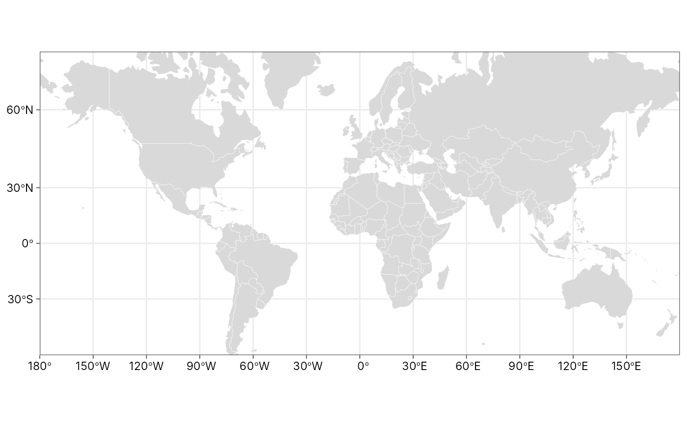
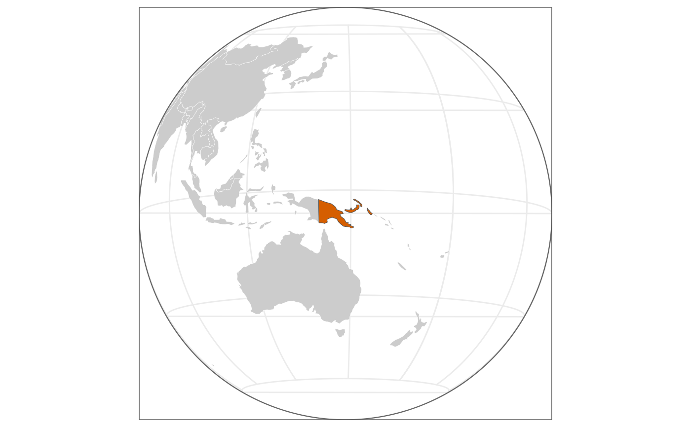

Map projections and graticules
map-projection.RdChoose a coordinate reference system by name and draw graticules (latitude/longitude lines), as in GeoSpaX.
geo_crs()returns ansf::st_crs()object for a named projection, centred on your data when that matters.coord_projection()draws any ggplot map (including every tidymapr map) in that projection: add it with+.map_graticule()sets the graticule interval and style, and can draw the outline of the globe on world maps.
projection | Use | CRS |
"equal_earth" | World maps with true areas (recommended for world choropleths) | EPSG:8857 |
"mercator" | World Mercator: conformal, areas grow towards the poles | EPSG:3395 |
"web_mercator" | Matches online tiles (OpenStreetMap, Esri) | EPSG:3857 |
"robinson" | Compromise world map | ESRI:54030 |
"mollweide" | Equal-area world map, elliptical | ESRI:54009 |
"winkel_tripel" | Compromise world map (National Geographic) | +proj=wintri |
"lonlat" | Plain longitude/latitude (WGS 84) | EPSG:4326 |
"utm" | Local maps in metres; UTM zone picked from data | EPSG:326xx/327xx |
"laea" | Equal-area, centred on data (continents, regions) | Lambert azimuthal |
"albers" | Equal-area conic for mid-latitude regions | Albers |
"orthographic" | The globe seen from space, centred on data | orthographic |
Any EPSG code (for example 32755) or PROJ/WKT string also works.
World projections accept lon0 to centre the map elsewhere, for example
lon0 = 150 for a Pacific-centred map that keeps Papua New Guinea in
the middle; use sf::st_break_antimeridian() on world polygons first so
countries crossing the new edge are split cleanly.
Usage
geo_crs(projection = "equal_earth", data = NULL, lon0 = NULL, lat0 = NULL)
coord_projection(
projection = "equal_earth",
data = NULL,
lon0 = NULL,
lat0 = NULL,
expand = FALSE,
...
)
map_graticule(
interval = 30,
labels = "auto",
colour = "grey80",
linewidth = 0.25,
linetype = "solid",
outline = FALSE
)Arguments
- projection
Projection name (see table), an EPSG number or a CRS string.
- data
Optional
sfobject or bbox used to centre"utm","laea","albers"and"orthographic".- lon0, lat0
Central longitude and latitude. Default: the centre of
data, or 0.- expand
Expand the plot limits a little beyond the data?
- ...
Passed to
ggplot2::coord_sf()(for examplexlim,ylim).- interval
Graticule spacing in degrees: one number for both, or
c(longitude, latitude).- labels
Which graticule lines to label:
"auto"(latitudes only on curved world projections, where longitude labels would crowd the pole line; both elsewhere),"both","latitude","longitude"or"none".TRUEandFALSEmean"auto"and"none".- colour, linewidth, linetype
Graticule line style.
- outline
Draw the edge of the map: the outline of the world on world projections, or the horizon circle on
"orthographic"maps.
Value
geo_crs(): a crs object. coord_projection() and
map_graticule(): settings to add to a ggplot with + (add
map_graticule() after coord_projection()).
References
Šavrič, B., Patterson, T. and Jenny, B. (2019). The Equal Earth map projection. International Journal of Geographical Information Science, 33, 454-465. doi:10.1080/13658816.2018.1504949
Examples
library(ggplot2)
# Life expectancy by country (spData::world, Natural Earth and World Bank)
world <- spData::world
plot_choropleth(world, lifeExp, n = 5, style = "jenks",
legend_title = "Life expectancy (years)") +
coord_projection("equal_earth") +
map_graticule(interval = 30, outline = TRUE)

# The same world in Mercator: note how Greenland and Antarctica swell
ggplot(world) +
geom_sf(fill = "grey85", colour = "white", linewidth = 0.1) +
coord_projection("mercator", ylim = c(-7e6, 1.2e7)) +
map_graticule(interval = 30) +
theme_tidymapr()

# The globe from space, centred on Papua New Guinea
png <- world[world$name_long == "Papua New Guinea", ]
ggplot(world) +
geom_sf(fill = "grey80", colour = "white", linewidth = 0.1) +
geom_sf(data = png, fill = "#D55E00") +
coord_projection("orthographic", data = png) +
map_graticule(30, outline = TRUE) +
theme_tidymapr(grid = "none")

# Local maps: UTM zone picked from the Mt Wilhelm sites (55S)
sites <- geo_as_sf(geo_example_sites(), lon, lat)
geo_crs("utm", data = sites)$input
#> [1] "EPSG:32755"